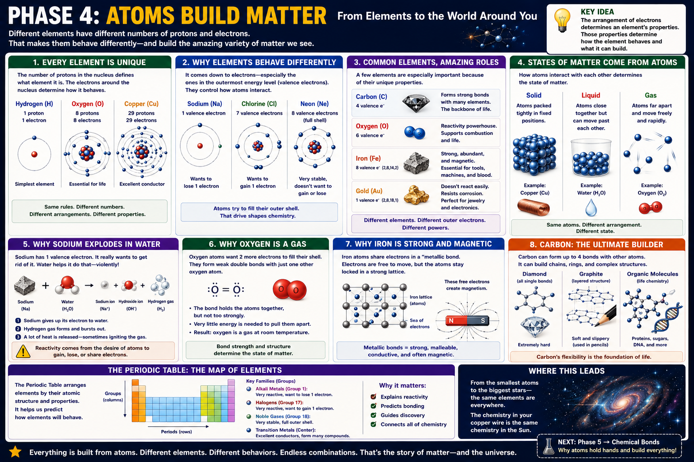

1 proton
Hydrogen is the simplest element. A neutral hydrogen atom also has one electron.
Chemistry · Atoms · Elements · Matter
A lesson for Klins on why each element is unique, how electrons control chemical behavior, and how atomic structure produces the materials and states of matter around us.

The atomic number is the number of protons in the nucleus.
Hydrogen is the simplest element. A neutral hydrogen atom also has one electron.
Oxygen is defined by eight protons. Changing the number of neutrons creates an isotope, but changing the number of protons creates a different element.
Copper’s atomic structure gives it excellent electrical conductivity, making it valuable in wiring and electronics.
Protons determine identity. Electrons determine much of the behavior. Neutrons help stabilize the nucleus and affect atomic mass.
Valence electrons control many chemical interactions.
Sodium tends to lose one electron because doing so leaves a more stable outer arrangement. This makes sodium highly reactive.
Chlorine tends to gain one electron to complete its outer shell. This makes it reactive in the opposite direction from sodium.
Neon already has a stable electron arrangement, so it rarely reacts. That is why noble gases are chemically quiet.
Different atomic structures produce very different properties.
Carbon forms strong bonds with itself and many other elements. Its flexibility makes it the backbone of organic chemistry and life.
Oxygen is highly reactive and participates in combustion, respiration, corrosion, and many biological reactions.
Iron is abundant, strong, and magnetic. It is central to tools, machines, structures, and blood chemistry.
Gold resists corrosion and conducts electricity, making it useful in jewelry and high-reliability electronics.
The same type of atom can exist in different states depending on energy and arrangement.
Particles are packed closely and remain in relatively fixed positions. They vibrate but do not move freely past one another.
Particles remain close together but can move past one another, allowing the material to flow and take the shape of its container.
Particles are far apart and move rapidly, filling the available space.
Sodium’s outer electron makes it eager to react.
Sodium gives up its outer electron and becomes a positively charged sodium ion. Water molecules participate in the transfer.
The reaction releases heat and forms hydrogen gas. The heat can ignite the hydrogen, making the reaction appear explosive.
Bonding strength and particle attraction influence physical state.
Two oxygen atoms share electrons in a double bond, creating a stable molecule.
The bond inside each O₂ molecule is strong, but the attraction between separate O₂ molecules is much weaker. At room temperature, the molecules move freely as a gas.
Metallic bonding creates a shared electron structure.
Iron atoms occupy an organized lattice rather than existing as separate molecules.
Some electrons are shared throughout the metal, allowing electrical and thermal energy to move efficiently.
Electron behavior in iron allows magnetic domains to align, producing strong magnetic effects.
Carbon can form up to four bonds and create many stable structures.
Each carbon atom bonds strongly in a rigid three-dimensional network. The result is extreme hardness.
Carbon atoms form layered sheets. The layers slide easily, making graphite soft and useful in pencils and lubricants.
Carbon forms chains, rings, and branching structures used in proteins, sugars, DNA, fuels, and plastics.
Elements are arranged so recurring properties become visible.
Rows, called periods, reflect increasing electron shells. Columns, called groups, contain elements with similar outer-electron patterns and therefore similar behavior.
Alkali metals tend to lose one electron. Halogens tend to gain one. Noble gases have full outer shells. Transition metals often conduct well and form multiple ions.
Use this sequence to connect atomic structure to real materials.
Use the number of protons to determine atomic identity.
Use valence electrons to predict whether the element tends to gain, lose, or share electrons.
Decide whether ionic, covalent, or metallic bonding is likely.
Ask how particle arrangement explains hardness, conductivity, magnetism, reactivity, or state of matter.
Explain why copper becomes wire, iron becomes tools, gold becomes contacts, and carbon becomes life chemistry.
The visible world is built from invisible differences. One extra proton creates a different element. One different electron arrangement changes reactivity. One different atomic structure can turn carbon into graphite, diamond, or living tissue.